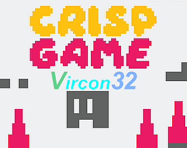
Crisp Game Library Portable
A port of crisp game lib portable by abagames to the Vircon32 fantasy console.
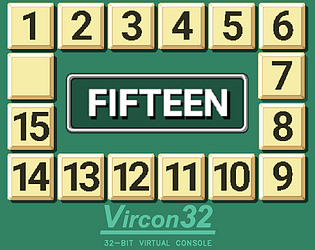
Fifteen
The fifteen sliding puzzle game for Vircon32, based on the code from the 2048 game by Carra.
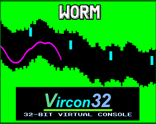
Worm
Copter / Worm game remake for Vircon32 with 5 game modes and a seed system.
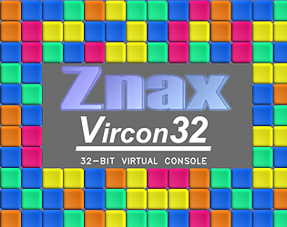
Znax
A remake of Znax, the connect-4 style flash game by Nick Kouvaris, for the Vircon32 fantasy console.
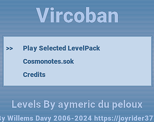
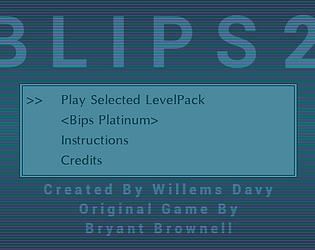
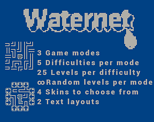
Waternet
A multiplatform water pipe puzzle game written for old consoles and handhelds, ported to Vircon32.
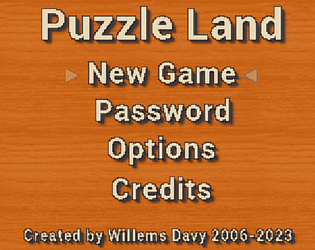
Puzzle Land
A remake of the Game Boy game Daedalian Opus (also known as Puzzle Road in Japan) for Vircon32.
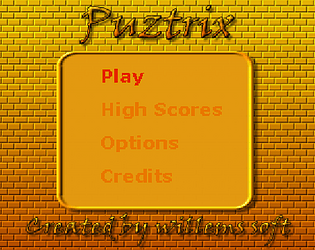
Puztrix
A remake of the Gravnic game from inside the NES game Puzznic, for Vircon32.
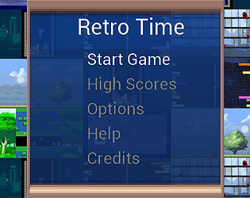
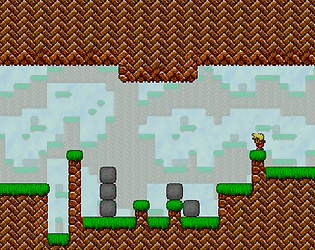
Blockdude
A remake of the TI calculator game by Brandon Sterner, as well as the Blockman game from Soleau Software.
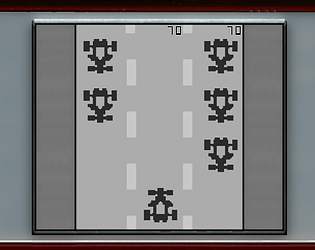
Formula 1
A small fictive Formula 1 Game & Watch style game with high score keeping, for Vircon32.
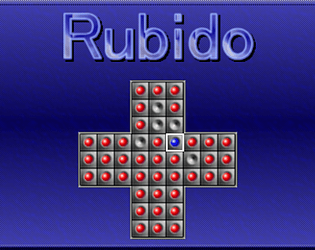
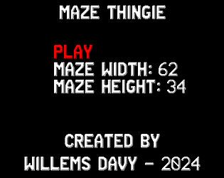